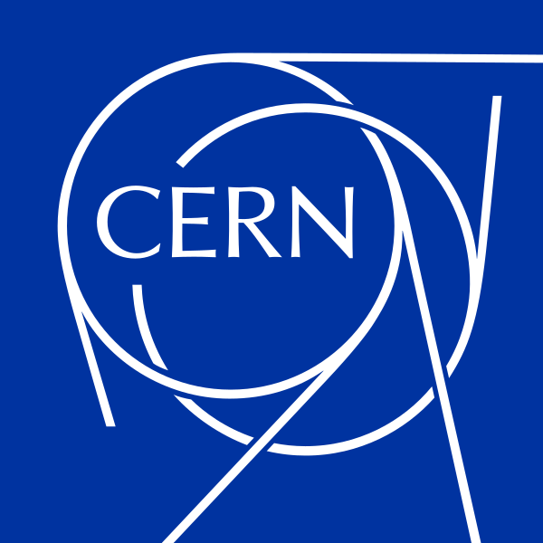

CGV
Calorimeter Geometry Viewer
NIPSCERN · ATLAS
Initializing…
Web continuation of the PhD thesis of Prof. Dr. Luciano Manhães de Andrade Filho — now as a browser-based Calorimeter Geometry Viewer for the ATLAS Experiment at the LHC.
